This Snowflake Quickstart covers the basics of training machine learning models, interpreting them, and deploying them to make predictions.
With Dataiku's Visual Snowpark ML plugin - you won't need to write a single line of code. That's right!
- Domain experts - you don't need to fuss around with learning programming to inject ML into your team.
- Data Scientists - we're all trying to roll our own abstracted ML training and deployment platform - and we think you'll like this one.
Use Case
Consumer lending is difficult. What factors about an individual and their loan application could indicate whether they're likely to pay back the loan? How can our bank optimize the loans approved and rejected based on our risk tolerance? We'll use machine learning to help with this decision making process. Our model will learn patterns between historical loan applications and default, then we can use it to make predictions for a fresh batch of applications.
What You'll Learn
The exercises in this lab will walk you through the steps to:
- Use Snowflake's "Partner Connect" to create a Dataiku cloud trial
- Create a Snowpark-optimized warehouse (for ML workloads)
- Upload a base project in Dataiku with our data sources in Snowflake
- Look at our loan data, understand trends through correlation matrices
- Train, interpret, and deploy Machine Learning models in Dataiku - powered by Snowpark ML
- Use our trained model to make new predictions
(Optional)Set up an MLOps process to retrain the model, check for accuracy, and make new predictions on a weekly basis
What You'll Need
- Snowflake free 30-day trial environment
- Dataiku free 14-day trial environment (via Snowflake Partner Connect)
If you haven't already, register for a Snowflake free 30-day trial The rest of the sections in this lab assume you are using a new Snowflake account created by registering for a trial.
- Region - Although not a requirement we'd suggest you select the region that is physically closest to you for this lab
- Cloud Provider - Although not a requirement we'd suggest you select
AWSfor this lab - Snowflake edition - We suggest you select select the
Enterprise editionso you can leverage some advanced capabilities that are not available in the Standard Edition.
After activation, you will create a usernameand password. Write down these credentials. Bookmark this URL for easy, future access.
Log Into the Snowflake User Interface (UI)
Open a browser window and enter the URL of your Snowflake 30-day trial environment. You should see the login screen below. Enter your unique credentials to log in.
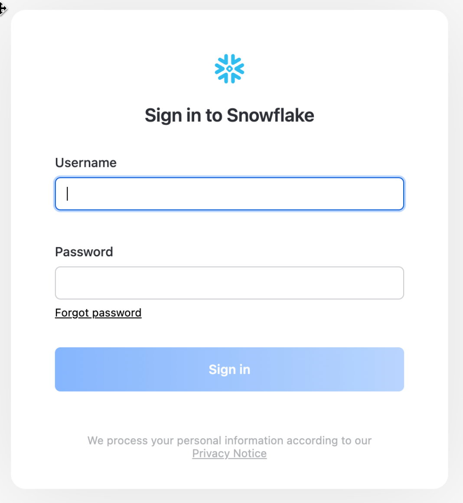
You may see "welcome" and "helper" boxes in the UI when you log in for the first time. Close them by clicking on Skip for now in the bottom right corner in the screenshot below.

Create Dataiku trial via Partner Connect
At the top right of the page, confirm that your current role is ACCOUNTADMIN, by clicking on your profile on the top right.
- Click on
Data Productson the left-hand menu - Click on
Partner Connect - Search for Dataiku
- Click on the
Dataikutile
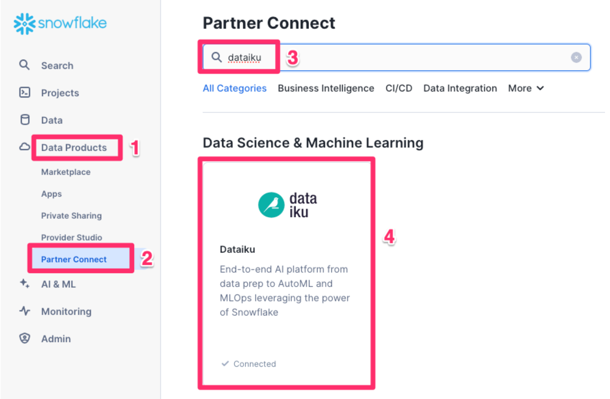
This will automatically create the connection parameters required for Dataiku to connect to Snowflake. Snowflake will create a dedicated database, warehouse, system user, system password and system role, with the intention of those being used by the Dataiku account.
For this lab we'd like to use the PC_DATAIKU_USER to connect from Dataiku to Snowflake, and use the PC_DATAIKU_WH when performing activities within Dataiku that are pushed down into Snowflake.
This is to show that a Data Science team working on Dataiku and by extension on Snowflake can work completely independently from the Data Engineering team that works on loading data into Snowflake using different roles and warehouses.

- Click
Connect - You will get a pop-ip which tells you your partner account has been created. Click on
Activate
This will launch a new page that will redirect you to a launch page from Dataiku.
Here, you will have two options:
- Login with an existing Dataiku username
- Sign up for a new Dataiku account
- We assume that you're new to Dataiku, so ensure the
"Sign Up" box is selected, and sign up with either GitHub, Google or your email address and your new password.
Make sure you use the same email address that you used for your Snowflake trial.
Click sign up.

When using your email address, ensure your password fits the following criteria:
- At least 8 characters in length
- Should contain: Lower case letters (a-z) Upper case letters (A-Z) Numbers (i.e. 0-9)
You should have received an email from Dataiku to the email you have signed up with. Activate your Dataiku account via the email sent.
Review Dataiku Setup
Upon clicking on the activation link, please briefly review the Terms of Service of Dataiku Cloud. In order to do so, please scroll down to the bottom of the page.
- Click on
I AGREEand then click onNEXT

- Complete your sign up some information about yourself and then click on
Start. - You will be redirected to the Dataiku Cloud Launchpad site. Click
GOT IT!to continue.

This is the Cloud administration console where you can perform tasks such as inviting other users to collaborate, add plugin extensions, install industry solutions to accelerate projects as well as access community and academy resources to help your learning journey.
Add the Visual SnowparkML Plugin
It's beyond the scope of this course to cover plugins in depth but for this lab we would like to enable a few the Visual SnowparkML plugin so lets do that now.
- Click on
Pluginson the left menu - Select
+ ADD A PLUGIN - Find
Visual SnowparkML - Check
Install on my Dataiku instance, and clickINSTALL


- Click on
Code Envson the left menu - Select
ADD A CODE ENVIRONMENT - Select
NEW PYTHON ENV - Name your code env
py_39_snowparkNOTE: The name must match exactly - Click
CREATE
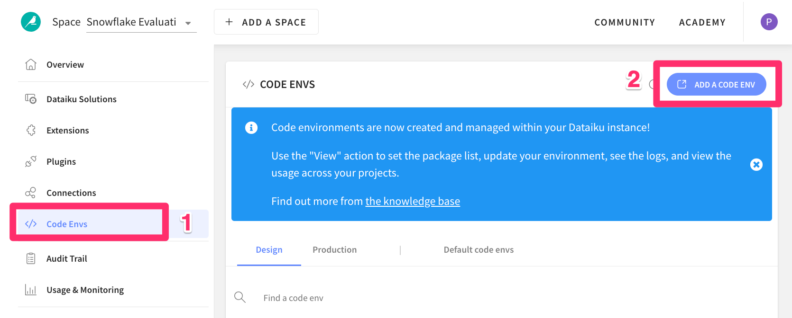


- Select `Pandas 1.3 (Python 3.7 and above) from Core Packages menu
- Add the following packages
scikit-learn==1.3.2
mlflow==2.9.2
statsmodels==0.12.2
protobuf==3.16.0
xgboost==1.7.3
lightgbm==3.3.5
matplotlib==3.7.1
scipy==1.10.1
snowflake-snowpark-python==1.14.0
snowflake-snowpark-python[pandas]==1.14.0
snowflake-connector-python[pandas]==3.7.0
MarkupSafe==2.0.1
cloudpickle==2.0.0
flask==1.0.4
Jinja2==2.11.3
snowflake-ml-python==1.5.0
- Select
rebuild envfrom the menu on the left - Click
Save and update

You've now successfully set up your Dataiku trial account via Snowflake's Partner Connect. We are now ready to continue with the lab. For this, move back to your Snowflake browser.
Return to the Snowflake UI
We will now create an optimized warehouse
- Click
Adminfrom the bottom of the left hand menu - Then
Warehouses - Then click
+ Warehousein the top right corner

Once in the New Warehouse creation screen perform the following steps:
- Create a new warehouse called
SNOWPARK_WAREHOUSE - For the type select
Snowpark-optimized - Select
Mediumas the size - Lastly click
Create Warehouse

- Select your new Snowflake Warehouse by
clicking on it once.

We need to permission the Dataiku Role that was created by Partner Connect in the earlier chapter for this new warehouse.
- Scroll down to Privileges, and click
+ Privilege

- For the Role select the role
PC_DATAIKU_ROLE - Under Pivileges grant the
USAGEprivilege - Click on
Grant Privileges

You should now see your new privileges have been applied

Return to the Dataiku trial launchpad in your browser
- Ensure you are on the
Overviewpage - Click on
OPEN INSTANCEto get started.

Congratulations you are now using the Dataiku platform! For the remainder of this lab we will be working from this environment which is called the design node, its the pre-production environment where teams collaborate to build data products.
Now lets import our first project.
- Download the project zip file to your computer - Don't unzip it!
Once you have download the starter project we can create our first project
- Click
+ NEW PROJECT - Then
Import project
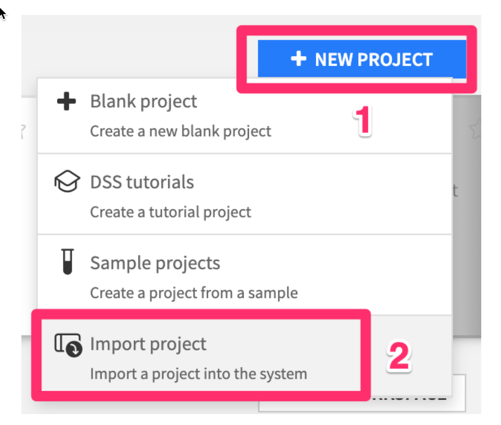
- Choose the .zip file you just downloaded, then click
IMPORT

You should see a project with 4 dataset - two local CSVs which we've then imported into Snowflake

Now that we have all our setup done, lets start working with our data.
Before we begin analyzing the data in our new project lets take a minute to understand some of the concepts and terminology of a project in Dataiku.
Here is the project we are going to build along with some annotations to help you understand some key concepts in Dataiku.

- A dataset is represented by a blue square with a symbol that depicts the dataset type or connection. The initial datasets (also known as input datasets) are found on the left of the Flow. In this project, the input dataset will be the one we created in the first part of the lab.
- A recipe in Dataiku DSS (represented by a circle icon with a symbol that depicts its function) can be either visual or code-based, and it contains the processing logic for transforming datasets. In addition to the core Visual and Code recipes Dataiku can be expanded with the use of plugins which are either from the freely available Dataiku library or developed by users. We will use the Visual SnowparkML plugin today
- Machine learning processes are represented by green icons.
- The Actions Menu is shown on the right pane and is context sensitive.
- Whatever screen you are currently in you can always return to the main Flow by clicking the Flow symbol from the top menu (also clicking the project name will take you back to the main Project page).
Double clickinto theLOAN_REQUESTS_KNOWN_SFdataset. This is our dataset of historical loan applications, a number of attributes about them, and whether the loan was paid back or defaulted (the DEFAULTED column - 1.0 = default, 0.0 = paid back).
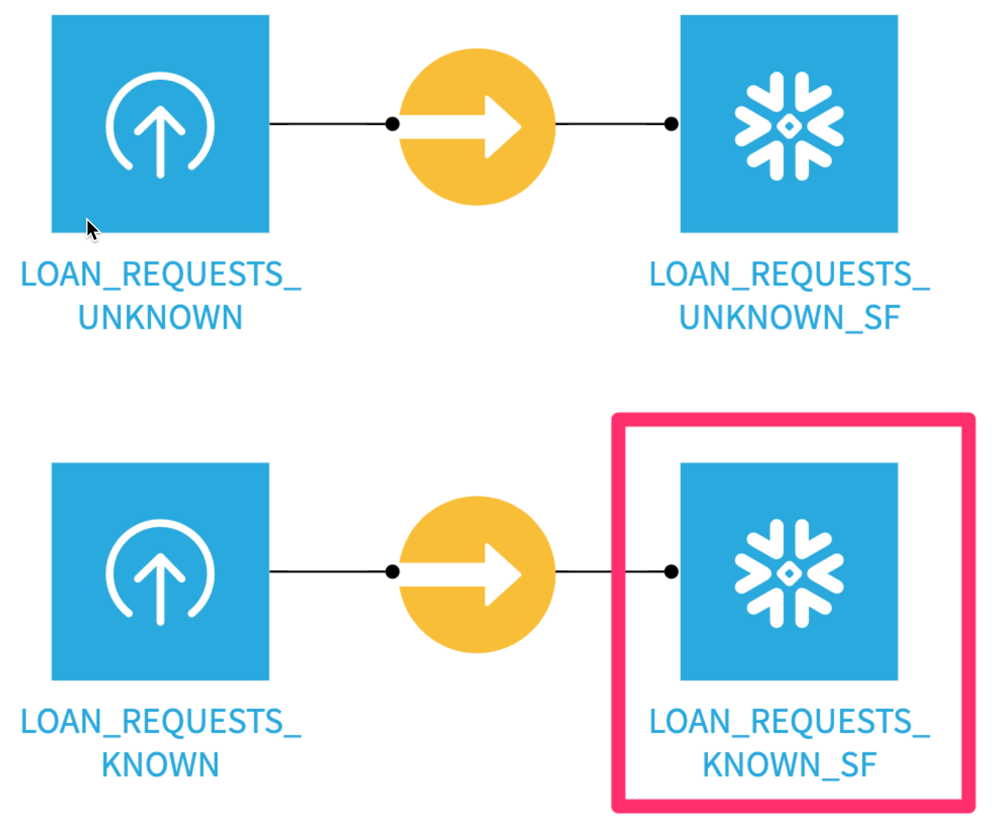
- Click the
Statisticstab on the top - Next click
+ Create first worksheet
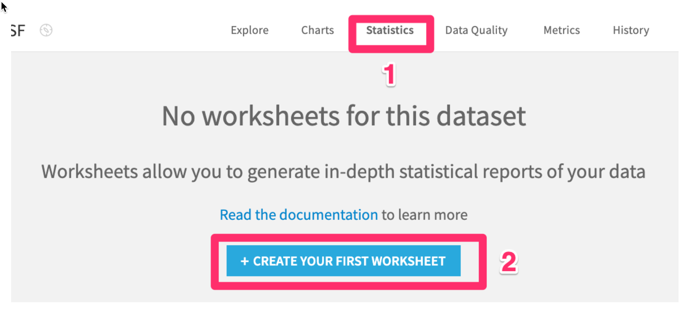
- Then select
Automatically suggest analyses

- Choose a few of the suggestions, be sure to include the Correlation Matrix in your selections then click
CREATE SELECTED CARDS

Question: What trends do you notice in the data?
Look at the correlation matrix, and the DEFAULTED row. Notice that INTEREST_RATE has the highest correlation with DEFAULTED. We should definitely include this feature in our models!

Positive correlation means as INTEREST_RATE rises, so does DEFAULTED (higher interest rate -> higher probability of default). Notice MONTHLY_INCOME has a negative correlation to DEBT_TO_INCOME_RATIO. This means that as monthly income goes up, applicants' debt to income ratio generally goes down.
See if you can identify a few other features we should include in our models.
Create a new Visual SnowparkML recipe
Now we will tran an ML model using our plugin. Return to the flow either by clicking on the flow icon or by using the keyboard shortcut (g+f)
- From the Flow click once on the
LOAN_REQUESTS_KNOWN_SFdataset. - From the
Actions menuon the right scroll down and select theVisual Snowpark ML plugin

- Click Train ML Models on Snowpark

We now need to set our three Outputs
- Click on
Setunder theGenerated Train Dataset

- Set the name to
train - Select
PC_DATAIKU_DBto store into - Click
CREATE DATASET
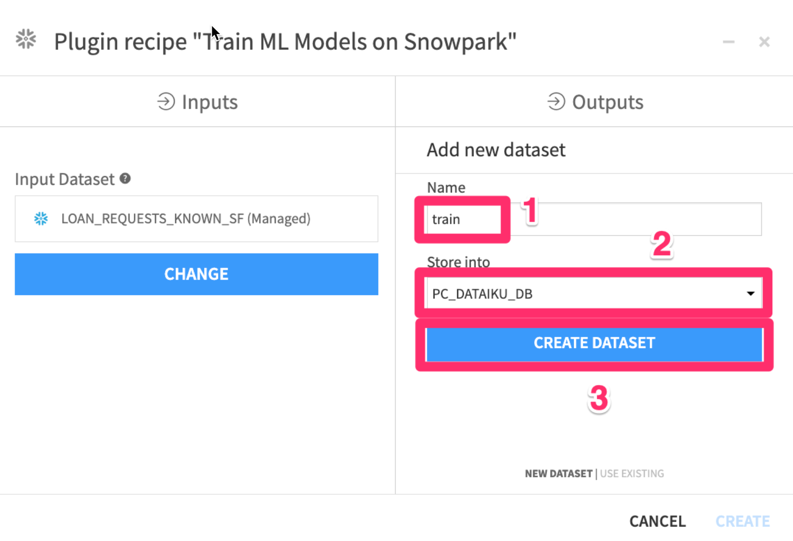
We will now repeat this process for the other two outputs
- Click on
Setunder theGenerated Test Dataset
- Set the name to
test - Select
PC_DATAIKU_DBto store into - Click
CREATE DATASET
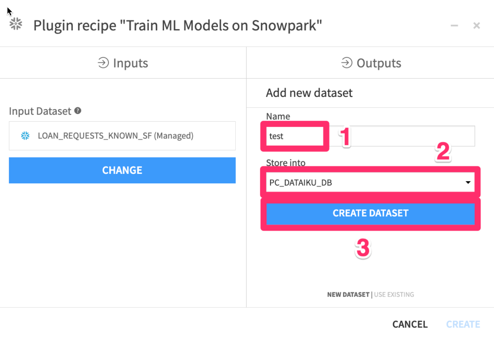
- Click on
Setunder theModels Folder
- Set the name to
models - Select
dataiku-managed-storageto store into - Click
CREATE FOLDER

- Your three outputs should now look like the image below. Finally click on
CREATE

Define model training settings
Lets fill out the parameters for our training session.
- Give your model a name
- Choose
DEFAULTEDas the target column - Select
Two-class classificationas the prediction type - Choose
ROC AUCas our model metric. This is a common machine learning metric for classification problems.
Leave the Train ratio and random seed as is. This will split our input dataset into 80% of records for training, leaving 20% for an unbiased evaluation of the model

- Choose the following features to include in our model. Make sure to make a selection for Encoding / Rescaling and Impute Missing Values With - don't leave them empty.


- Choose the following algorithms to start. We'll go through the basics of these algorithms after we kick off our model training.
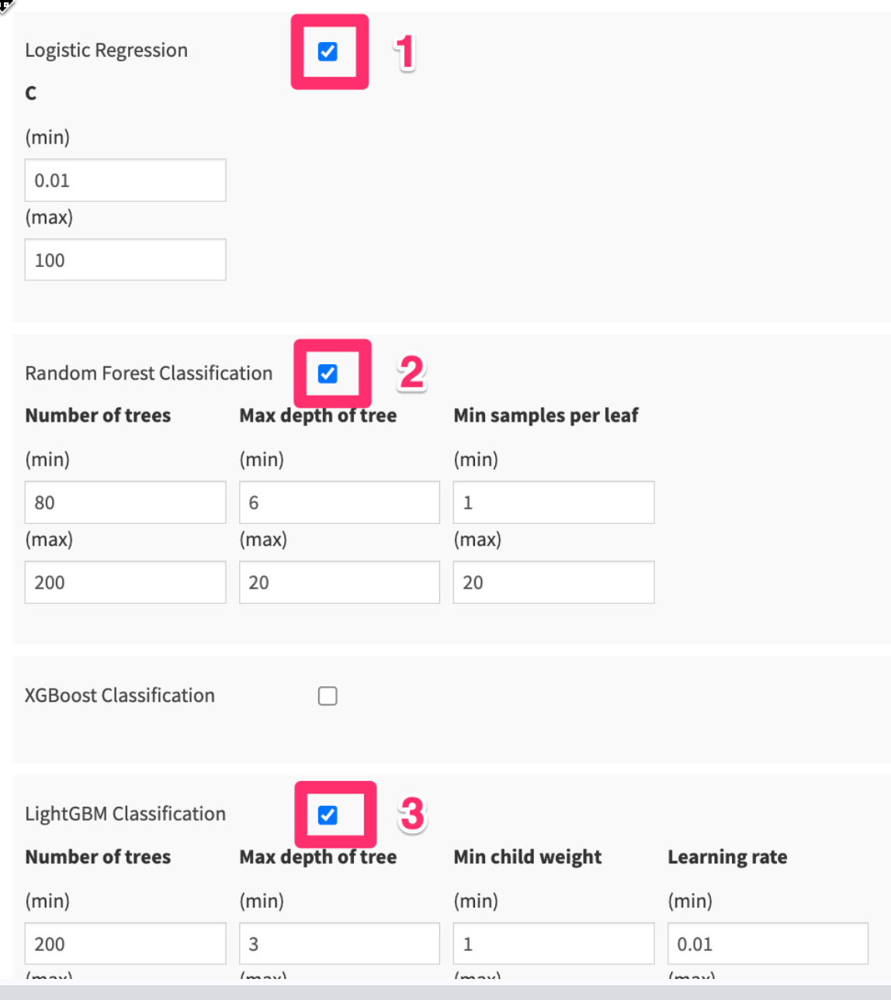
- Leave the Search space limit as 4
- Write SNOWPARK_WAREHOUSE to use the Snowpark-optimized warehouse we created earlier.
- Check the "Deploy to Snowflake ML Model Registry" box. This will deploy our best trained model to Snowflake's Model Registry - where we can use it to make predictions later on.
- Finally Click the
RUNbutton in the bottom left hand corner to start training our models.

While we're waiting for our models to train, let's learn a bit about machine learning. This is an oversimplification of some complicated topics. If you're interested there are links at the end of the course for the Dataiku Academy and many other free resources online.
Machine Learning, Classification, and Regression
Machine learning - the use and development of computer systems that are able to learn and adapt without following explicit instructions, by using algorithms and statistical models to analyze and draw inferences from patterns in data.
Oversimplified definition of machine learning - Fancy pattern matching based on the data you feed into it
The two most common types of machine learning solutions are supervised and unsupervised learning.
Supervised learning Goal: predict a target variable
- category = classification
- numerical value = regression
Examples:
- Predict the sales price of an apartment (regression)
- Forecast the winner of an election (classification)
Unsupervised learning Goal: identify patterns
- Group similar individuals = clustering
- Find anomalies = anomaly detection
Examples:
- Segment consumers according to their behavior (clustering)
- Find anomalous opioid shipments from a DEA database (anomaly detection)
Our problem - predicting loan defaults, is a supervised, classification problem.
We need a structured dataset to train a model, in particular:
- Rows measuring individual observations (one transaction per row)
- Target column with real labels of what we want to predict
- Other columns (features) that the model can use to predict the target (through fancy pattern matching)
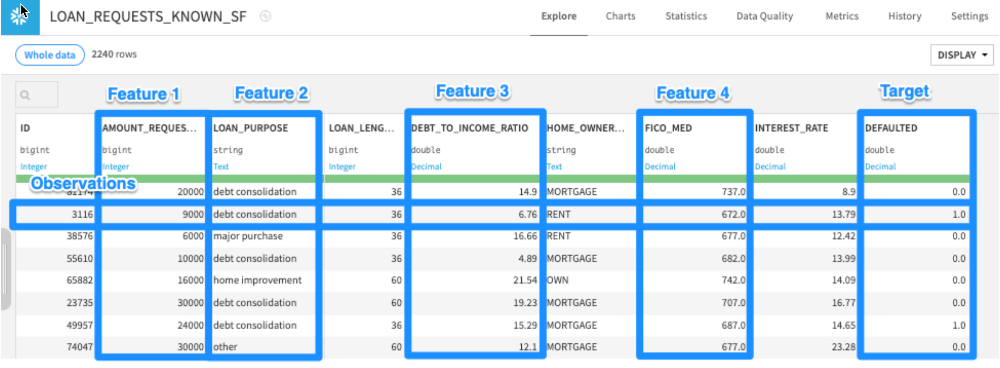
Train / Test split
Once we have a structured dataset with observations, a target, and features, we split it into train and test sets
We could split it:
- Randomly
- Based on time
- Other criteria
A random split of 80% train / 20% test is common
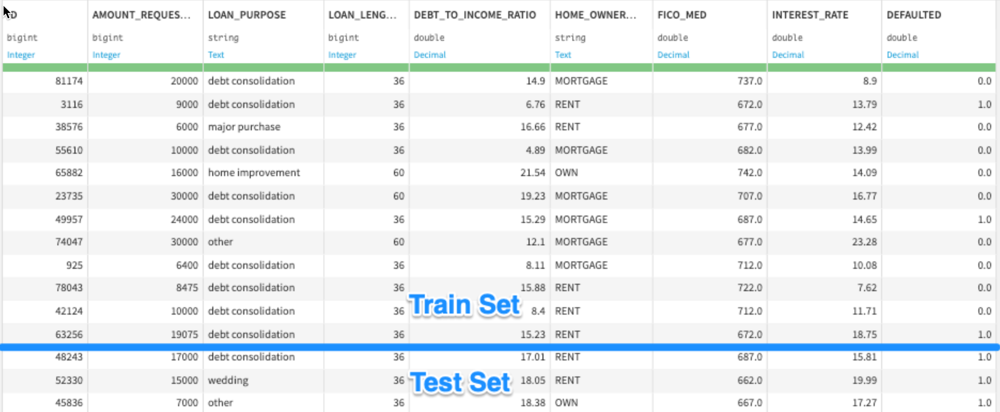
We train models on the train set, then evaluate them on the test set. This way, we can simulate how the model will perform on data that it hasn't seen before.
Feature Handling
Two keys to choosing features to include in our model:
- Only include variables that you know you'll have at the time you need to make predictions (e.g. at time of sale for future credit card transactions)
- Use your domain knowledge - if you think a variable could be a driver of the target, include it in your model!
Most machine learning models require variables to be a specific format to be able to find patterns in the data.
We can generally break up our variables into two categories:
- Numeric - e.g. AMOUNT_REQUESTED, DEBT_TO_INCOME_RATIO
- Categorical - e.g. LOAN_PURPOSE, STATE
Here are some ways to transform these types of features:
Numeric - e.g. AMOUNT_REQUESTED, DEBT_TO_INCOME_RATIO
Things you typically want to consider:
- Impute a number for rows missing values. Average, median are common
- Rescale the variable. Standard rescaling is common (this transforms a value to its Z-score)

Categorical - e.g. LOAN_PURPOSE, STATE
Things you typically want to consider:
- Encode values with a number. Dummy encoding, ordinal encoding are common
- Impute a value for rows missing values. You can treat a missing value as its own category, or impute with the most common value.

Machine Learning Algorithms
Let's go through a few common machine learning algorithms.
Linear Regression
For linear regression (predicting a number), we find the line of best fit, plotting our feature variables and our target
y = b0 + b1 * x
If we were training a model to predict exam scores based on # hours of study, we would solve for this equation
exam_score = b0 + b1 * (num_hours_study)

We use math (specifically a technique called Ordinary Least Squares[1]) to find the b0 and b1 of our best fit line
exam_score = b0 + b1 * (num_hours_study)
exam_score = 32 + 8 * (num_hours_study)

Logistic Regression
Logistic regression is similar to linear regression - except built for a classification problem (e.g. loan default prediction).
log(p/1-p) = b0 + b1 * (num_hours_study)
log(p/1-p) = 32 + 8 * (num_hours_study)
p = probability of exam success

Decision Trees
Imagine our exam pass/fail model with more variables.
Decision trees will smartly create if / then statements, sending each row along a branch until it makes a prediction of your target variable

Random Forest
A Random Forest model trains many decision trees, introduces randomness into each one, so they behave differently, then averages their predictions for a final prediction

Overfitting
We want our ML model to be able to understand true patterns in the data - uncover the signal, and ignore the noise (random, unexplained variation in the data)
Overfitting is an undesirable machine learning behavior that occurs when the machine learning model gives accurate predictions for training data but not for new data


How to control for overfitting
Logistic Regression
- Increasing C shrinks your equation coefficients
- Increase C to control more for overfitting
Example
C = 0.01: log(p/1-p) = 32 + 8 * (num_hours_study) + 6 * (num_hours_sleep)
C = 0.1: log(p/1-p) = 32 + 5 * (num_hours_study) + 4 * (num_hours_sleep)
C = 1: log(p/1-p) = 32 + 3 * (num_hours_study) + 2 * (num_hours_sleep)
C = 10: log(p/1-p) = 32 + 2 * (num_hours_study) + 0 * (num_hours_sleep)
C = 100: log(p/1-p) = 32 + 1 * (num_hours_study) + 0 * (num_hours_sleep)
Random Forest
- Maximum depth of tree how far down can each decision tree go?
- Decrease this to control more for overfitting
For more in-depth tutorials and self-paced machine learning courses see the links to Dataiku's freely available Academy in the last chapter of this course
Once we've trained our models, we'll want to take a deeper dive deep into how they're performing, what features they're considering, and whether they may be biased. Dataiku has a number of tools for evaluating models.
Double clickon your model (Green diamond) from the flow
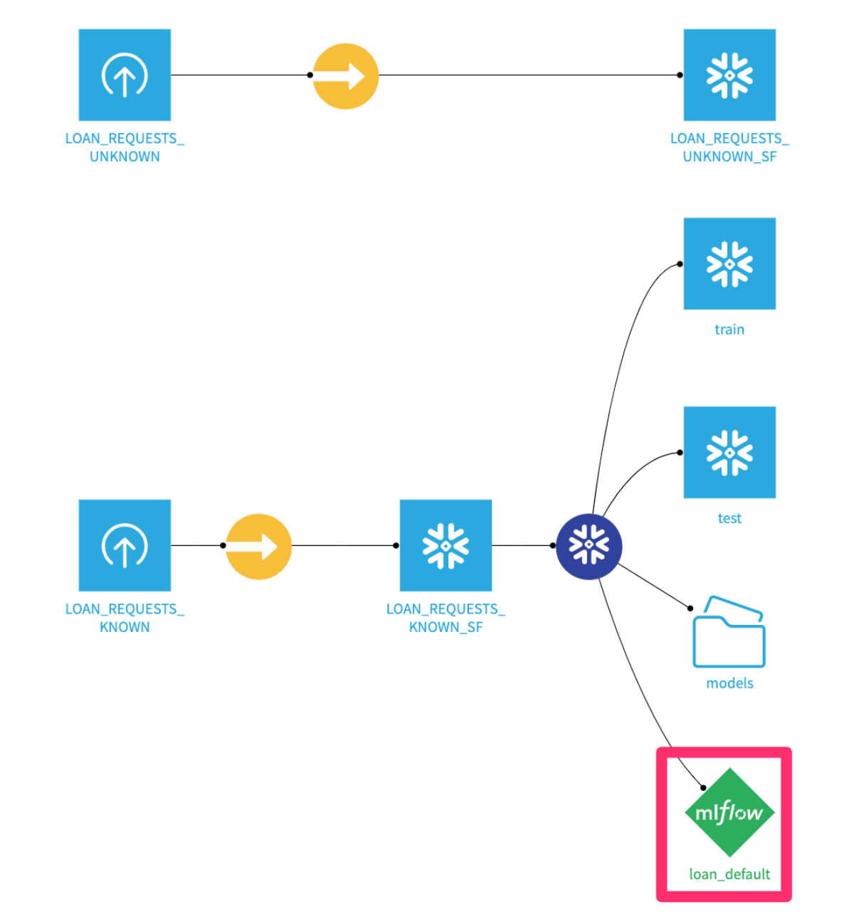
- You'll see your best trained model here.
Clickinto it.

- Select
Feature Importancefrom the menu on the left side - Then click
COMPUTE NOW

Here we can see that the top 3 features impacting the model are applicants' FICO scores, the interest rate of the loan, and the amount requested. This makes sense!

Scroll down on this page - you'll see the directional effect of each feature on default predictions. You can see that the higher FICO scores generally mean lower probability of default.

- Click on the
Confusion matrixtab from the menu on the left.
Here we can see how the model would have performed on the hold-out test set of loan applicants. Notice that my model is very good at catching defaulters (83 Predicted 1.0 out of 84 Actually 1.0), at the expense of mistakenly rejecting 124 applicants that would have paid back their loan.
Try moving the threshold bar back and forth. It will cause the model to be more or less sensitive. Based on your business problem, you may want a higher or lower threshold.
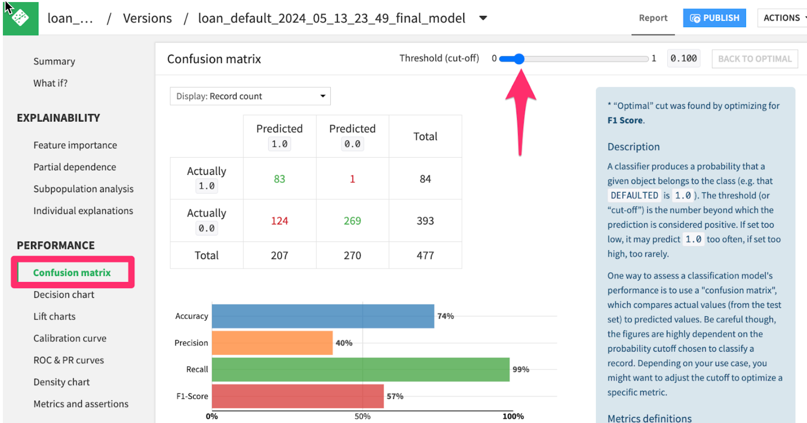
Using a machine learning model to make predictions is called scoring or inference
Score the unknown loan applications using the trained model
- Go to the project Flow, click once on the
LOAN_REQUESTS_UNKNOWN_SFdataset - Then click on the
Visual Snowpark MLplugin from the right hand Actions menu.

- Click
Score New Records using Snowpark

We need to add our model as an input and set an output dataset for the results of the scoring.
- In the
Inputsunder theSaved Modeloption click onSETto add your saved model - In the
Outputssection underScored Dataset Optionclick onSETand give your output dataset a name - For
Store intouse the `PC_DATAIKU_DB** connection - Click on
CREATE DATASET

- Your screen should now look like this. Go ahead and
click on CREATE

- Make sure the warehouse you created earlier
SNOWPARK_WAREHOUSEis selected then click onRUN

When it finishes, your flow should look like this

Double clickinto the output scored dataset - scroll to the right, and you should see predictions of whether someone is likely to pay back their loan or not!

Let's say we want to automatically run new loan applications through our model every week on Sunday night.
Assume that LOAN_REQUESTS_UNKNOWN is a live dataset of new loan applications that is updated throughout the week.
We want to rerun all the recipes leading up to unknown_loans_scored, where our model makes predictions.
Build a weekly scoring scenario
- Click into the Scenarios tab

- Click
+ CREATE YOUR FIRST SCENARIO

- Name your scenario something like
"Weekly Loan Application Scoring"

- Add a time-based trigger
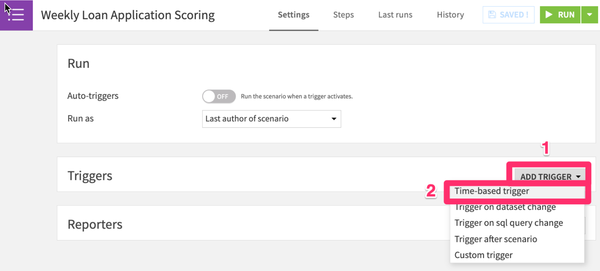
- Set the trigger to run
every week on Sunday at 9pm

- In the
Stepstab, clickAdd Step, thenBuild / Train
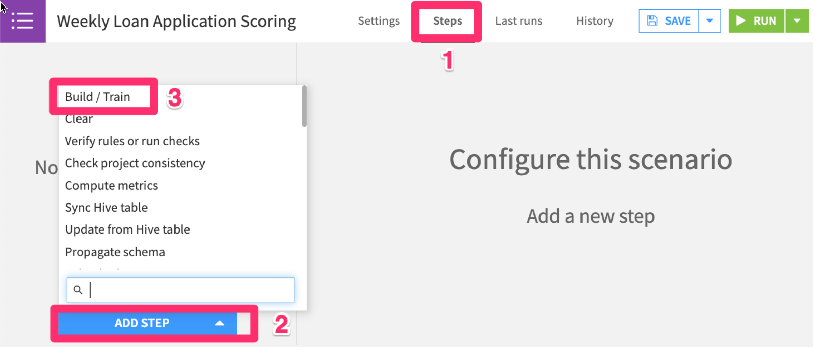
- Add a dataset to build

- Then choose the
unknown_loans_scoreddataset
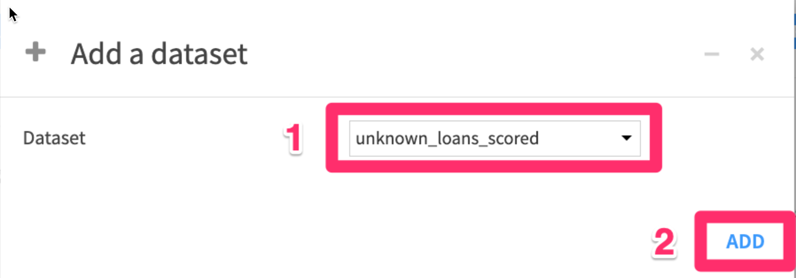
- Check the
Force-buildbutton to recursively build all datasets leading up tounknown_loans_scored, then click therunbutton to test it out.

You'll be able to see scenario run details in the "Last runs" tab

Build a monthly model retraining scenario (optional)
It's good practice to retrain machine learning models on a regular basis with more up-to-date data. The world changes around us; the patterns of loan applicant attributes affecting default probability are likely to change too.
If you have time you can assume that LOAN_REQUESTS_KNOWN is a live dataset of historical loan applications that is updated with new loan payback and default data on an ongoing basis.
You can automatically retrain your model every month with scenarios, and put in a AUC check to make sure that the model is performing and build the scored dataset
Congratulations on completing this introductory lab exercise! Congratulations! You've mastered the Snowflake basics and you've taken your first steps toward a no-code approach to training machine learning models with Dataiku.
You have seen how Dataiku's deep integrations with Snowflake can allow teams with different skill sets get the most out of their data at every stage of the machine learning lifecycle.
We encourage you to continue with your free trial and continue to refine your models and by using some of the more advanced capabilities not covered in this lab.
What You Learned:
- Use Snowflake's "Partner Connect" to create a Dataiku cloud trial
- Create a Snowpark-optimized warehouse (for ML workloads)
- Upload a base project in Dataiku with our data sources in Snowflake
- Look at our loan data, understand trends through correlation matrices
- Train, interpret, and deploy Machine Learning models in Dataiku - powered by Snowpark ML
- Use our trained model to make new predictions
(Optional)Set up an MLOps process to retrain the model, check for accuracy, and make new predictions on a weekly basis
Related Resources
- Join the Snowflake Community
- Join the Dataiku Community
- Sign up for Snowflake University
- Join the Dataiku Academy